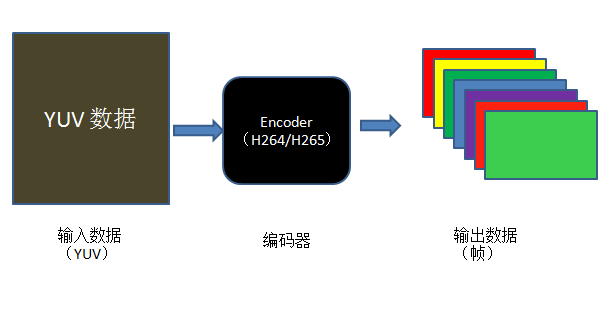
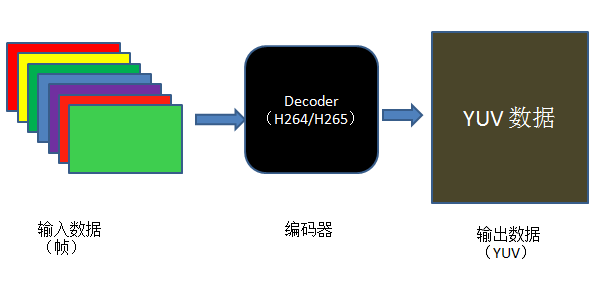

FFmpeg 编码实现
本例子实现的是将视频域 YUV 数据编码为压缩域的帧数据，编码格式包含了 H.264/H.265/MPEG1/MPEG2 四种 CODEC 类型。
实现的过程，可以大致用如下图表示:

从图中可以大致看出视频编码的流程:
- 首先要有未压缩的 YUV 原始数据。
- 其次要根据想要编码的格式选择特定的编码器。
- 最后编码器的输出即为编码后的视频帧。
根据流程可以推倒出大致的代码实现：
- 存放待压缩的 YUV 原始数据。此时可以利用 FFMpeg 提供的 AVFrame 结构体，并根据 YUV 数据来填充 AVFrame 结构的视频宽高、像素格式；根据视频宽高、像素格式可以分配存放数据的内存大小，以及字节对齐情况。
- 获取编码器。利用想要压缩的格式，比如 H.264/H.265/MPEG1/MPEG2 等，来获取注册的编解码器，编解码器在 FFMpeg 中用 AVCodec 结构体表示，对于编解码器，肯定要对其进行配置，包括待压缩视频的宽高、像素格式、比特率等等信息，这些信息，FFMpeg 提供了一个专门的结构体 AVCodecContext 结构体。
- 存放编码后压缩域的视频帧。FFMpeg 中用来存放压缩编码数据相关信息的结构体为 AVPacket。最后将 AVPacket 存储的压缩数据写入文件即可。
AVFrame 结构体的分配使用av_frame_alloc()函数，该函数会对 AVFrame 结构体的某些字段设置默认值，它会返回一个指向 AVFrame 的指针或 NULL指针(失败)。
AVFrame 结构体的释放只能通过av_frame_free()来完成。
注意，该函数只能分配 AVFrame 结构体本身，不能分配它的 data buffers 字段指向的内容，该字段的指向要根据视频的宽高、像素格式信息手动分配，本例使用的是av_image_alloc()函数。
代码实现大致如下：
|
|
编解码器相关的 AVCodec 结构体的分配使用avcodec_find_encoder(enum AVCodecID id)完成，该函数的作用是找到一个与 AVCodecID 匹配的已注册过得编码器；成功则返回一个指向 AVCodec ID 的指针，失败返回 NULL 指针。
该函数的作用是确定系统中是否有该编码器，只是能够使用编码器进行特定格式编码的最基本的条件，要想使用它，至少要完成两个步骤：
- 根据特定的视频数据，对该编码器进行特定的配置；
- 打开该编码器。
针对第一步中关于编解码器的特定参数，FFMpeg 提供了一个专门用来存放 AVCodec 所需要的配置参数的结构体 AVCodecContext 结构。
它的分配使用avcodec_alloc_context3(const AVCodec *codec)完成，该函数根据特定的 CODEC 分配一个 AVCodecContext 结构体，并设置一些字段为默认参数，成功则返回指向 AVCodecContext 结构体的指针，失败则返回 NULL 指针。
分配完成后，根据视频特性，手动指定与编码器相关的一些参数，比如视频宽高、像素格式、比特率、GOP 大小等。最后根据参数信息，打开找到的编码器，此处使用avcodec_open2()函数完成。
代码实现大致如下：
|
|
存放编码数据的结构体为 AVPacket，使用之前要对该结构体进行初始化，初始化函数为av_init_packet(AVPacket *pkt)，该函数会初始化 AVPacket 结构体中一些字段为默认值，但它不会设置其中的 data 和 size 字段，需要单独初始化,如果此处将 data 设为 NULL、size 设为 0，编码器会自动填充这两个字段。
有了存放编码数据的结构体后，我们就可以利用编码器进行编码了。
FFMpeg 提供的用于视频编码的函数为avcodec_encode_video2,它作用是编码一帧视频数据，该函数比较复杂，单独列出如下：
|
|
它会接收来自 AVFrame->data 的视频数据，并将编码数据放到 AVPacket->data 指向的位置，编码数据大小为 AVPacket->size。
其参数和返回值的意义：
- avctx: AVCodecContext 结构，指定了编码的一些参数；
- avPkt: AVPacket对象的指针，用于保存输出的码流；
- frame：AVFrame结构，用于传入原始的像素数据；
- got_packet_ptr:输出参数，用于标识是否已经有了完整的一帧；
- 返回值：编码成功返回 0， 失败返回负的错误码；
编码完成后就可将AVPacket->data内的编码数据写到输出文件中；代码实现大致如下：
|
|
编码的大致流程已经完成了，剩余的是一些收尾工作，比如释放分配的内存、结构体等等。
FFMpeg 解码实现
解码实现的是将压缩域的视频数据解码为像素域的 YUV 数据。实现的过程，可以大致用如下图所示。

从图中可以看出，大致可以分为下面三个步骤：
- 首先要有待解码的压缩域的视频。
- 其次根据压缩域的压缩格式获得解码器。
- 最后解码器的输出即为像素域的 YUV 数据。
根据流程可以推倒出大致的代码实现：
- 关于输入数据。首先，要分配一块内存，用于存放压缩域的视频数据；之后，对内存中的数据进行预处理，使其分为一个一个的 AVPacket 结构（AVPacket 结构的简单介绍如上面的编码实现）。最后，将 AVPacket 结构中的 data 数据给到解码器。
- 关于解码器。首先，利用 CODEC_ID 来获取注册的解码器；之后，将预处理过得视频数据给到解码器进行解码。
- 关于输出。FFMpeg 中，解码后的数据存放在 AVFrame 中；之后就将 AVFrame 中的 data 字段的数据存放到输出文件中。
对于输入数据，首先，通过 fread 函数实现将固定长度的输入文件的数据存放到一块 buffer 内。
H.264中一个包的长度是不定的，读取固定长度的码流通常不可能刚好读出一个包的长度；
对此，FFMpeg 提供了一个 AVCoderParserContext 结构用于解析读到 buffer 内的码流信息，直到能够取出一个完整的 H.264 包。
为此，FFMpeg 提供的函数为av_parser_parse2，该函数比较复杂，定义如下：
|
|
函数的参数和返回值含义如下：
- AVCodecParserContext *s:初始化过的 AVCodecParserContext 对象，决定了码流该以怎样的标准进行解析；
- AVCodecContext *avctx：预先定义好的 AVCodecContext 对象；
- uint8_t **poutbuf：AVPacket：：data 的地址，保存解析完成的包数据。
- int *poutbuf_size：AVPacket 的实际数据长度，如果没有解析出完整的一个包，该值为 0；
- const uint8_t *but:待解码的码流的地址；
- int buf_size:待解码的码流的长度；
- int64_t pts, int64_t dts:显示和解码的时间戳；
- int64_t pos:码流中的位置；
- 返回值为解析所使用的比特位的长度；
FFMpeg 中为我们提供的该函数常用的使用方式为：
|
|
如果参数poutbuf_size的值为0，那么应继续解析缓存中剩余的码流；如果缓存中的数据全部解析后依然未能找到一个完整的包，那么继续从输入文件中读取数据到缓存，继续解析操作，直到pkt.size不为0为止。
因此，关于输入数据的处理，代码大致如下：
|
|
注意，上面提到的av_parser_parse2函数用的几个参数，其实是与具体的编码格式有关的，它们应该在之前已经分配好了，我们只是放到后面来讲一下，因为它们是与具体的解码器强相关的。
对于解码器。
与上面提到的编码实现类似，首先，根据 CODEC_ID 找到注册的解码器 AVCodec，FFMpeg 为此提供的函数为avcodec_find_decoder()；
其次，根据找到的解码器获取与之相关的解码器上下文结构体 AVCodecC，使用的函数为编码中提到的avcodec_alloc_context3；
再者，如上面提到的要获取完整的一个 NALU，解码器需要分配一个 AVCodecParserContext 结构，使用函数av_parser_init；
最后，前面的准备工作完成后，打开解码器，即可调用 FFMpeg 提供的解码函数avcodec_decode_video2对输入的压缩域的码流进行解码，并将解码数据存放到 AVFrame->data 中。
代码实现大致如下：
|
|
注意，上面解码的过程中，针对具体的实现，可能要做一些具体参数上的调整，此处只是理清解码的流程。
对于输出数据。
解码完成后，解码出来的像素域的数据存放在 AVFrame 的 data 字段内，只需要将该字段内存放的数据之间写文件到输出文件即可。
解码函数avcodec_decode_video2函数完成整个解码过程，对于它简单介绍如下：
|
|
该函数各个参数的意义：
- AVCodecContext *avctx：编解码器上下文对象，在打开编解码器时生成；
- AVFrame *picture: 保存解码完成后的像素数据；我们只需要分配对象的空间，像素的空间codec会为我们分配好；
- int *got_picture_ptr: 标识位，如果为1，那么说明已经有一帧完整的像素帧可以输出了;
- const AVPacket *avpkt: 前面解析好的码流包；
由此可见，当标识位为1时，代表解码一帧结束，可以写数据到文件中。代码如下：
|
|
解码的大致流程已经完成了，剩余的是一些收尾工作，比如释放分配的内存、结构体等等。